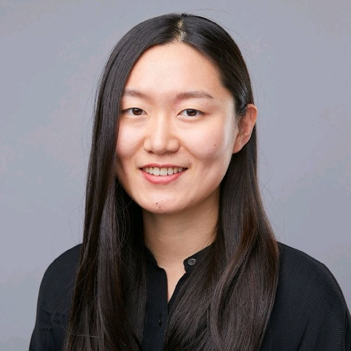
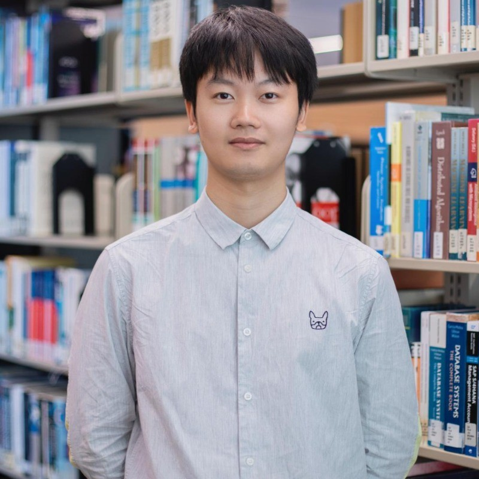
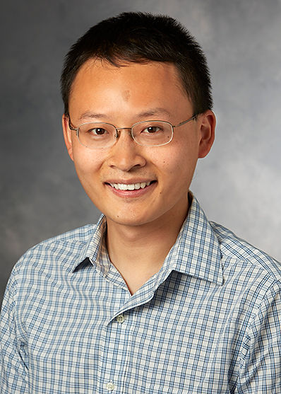

Meet the researchers presenting at M2C @ ICLR 2027.
Research ScientistOpenAI

Alignment ResearcherMeta Superintelligence Labs
Chief ScientistSakana AI
Associate ProfessorUniversity of California, Berkeley

Founding MemberRecursive Superintelligence

Associate ProfessorStanford University